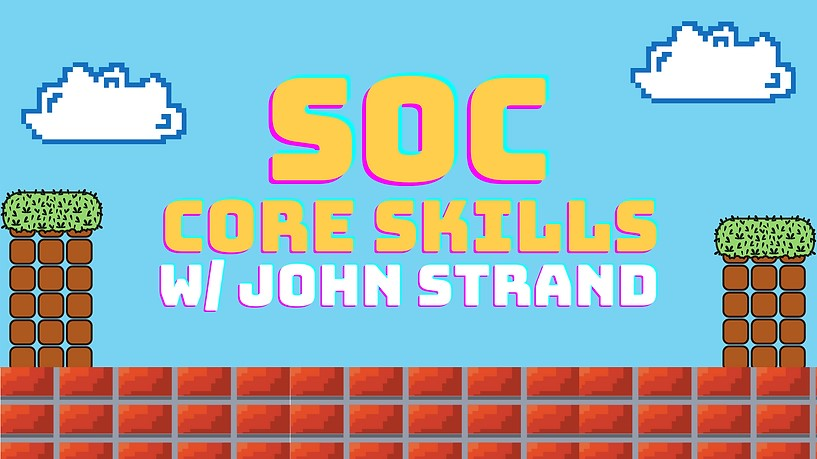

Introduction
From June 12 - 15, 2023, John Strand from Black Hills Information Security taught a 16-hour course called
"SOC
Core Skills". The class is based on foundational SOC skills that John thinks all security
analysts should have, and are skills that he expects out of analysts that work for him.
SOC Core Skills covered the following security topics:
- Core networking skills
- Live Windows Forensics
- Attack and Defense
- Live Linux Forensics
- Memory Forensics
- Active Directory Analysis
- Network Threat Hunting
- Basics of Vulnerability Management
- The Incident Response Process
This course is the 1st installment of a trifecta of introductory security courses created by John Strand. The
first one is "SOC Core Skills". The second and third installments are respectivelly called "Getting Started in
Security with BHIS and MITRE ATT&CK" and "Active Defense & Cyber Deception".
As an aspiring Security Analyst, I ate up every piece of this class. Some of it was overlap with the Intro to
Security course, but that is to be expected since a SOC Analyst is considered an entry-level role. If I was
currently working as a SOC Analyst, I feel like I would be able to put many of the lessons taught in this course
to good use in the real-world, and many people who took the course and are in that position said likewise.
I had some hands-on time with DeepBlueCLI, Event Viewer, WireShark,DVWA ,ZAP ,
TCPDump,
Volatility, and a lot of Linux and Windows CLI. Other tools like RITA and
Nessus had reports we were able to analyze, but no actual hands-on practical. I've mentioned this before,
but my favorite part about these labs is how John ties
each one back to being a defensive minded blue teamer. We were able to see what attacks like a password
spray
and a reverse shell would look like and fairly simple things we can do in our environment to remediate
those
exploits. And the lessons could apply to anyone in any environment because the labs were predominately based on
open-source tools if not available outright from the Microsoft Suite.
John revamped the Virtual Machine he creates for his courses. He even came up with a super cool way to update
his lab procedures and index on the fly via a GitHub script. This VM is now a part of my own home lab
environment, and it allows me to practice what I learned at any time. The single best part about this VM is the
fact that I can perform red and blue tactics on the SAME VM which is critical to those who don't have the time,
funds, or knowledge to build out a traditional home lab infrastructure.
My biggest takeaway from this course was actually a broad statement made by John where he said it is better to
learn something not good then not learn something good. This really helped me put things to perspective and take
action to learn simply everything that i come across.
The funniest moment of the course was the argument of text editors! John summed it up as such:
People who use vi are ninjas (they're stealthy and only carry what they need).
People who use emacs are pirates (they have tools for everything to be prepared for anything).
People who use nano just woke up and hit their head getting out of bed ('nuff said).
After the class, I went through all the labs again. Since I'm not currently a cybersecurity professional, it is
up to me to practice and become as proficient as I can. Performing the labs over again and creating write-ups
for each one helps me retain knowledge. It also gives me a resource to look back to if I come across something
similar in the future and need to refresh my memory. Some of the projects that are in my portfolio are directly
from this course.
I want to end this post by giving a huge thanks to John Strand, and everyone at BHIS for hosting another
fantastic
event.